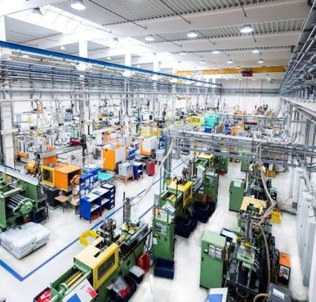

¿Qué es Lean Manufacturing?
Lean Manufacturing es una filosofía de gestión que busca generar valor para el cliente utilizando menos recursos. Para conseguirlo, identifica y reduce actividades que consumen tiempo, materiales o esfuerzo sin aportar valor al producto.
Herramientas principales
Las 5S
Las 5S ayudan a mantener espacios de trabajo organizados, limpios y seguros.
- Seiri: clasificar lo necesario y retirar lo innecesario.
- Seiton: ordenar cada elemento para encontrarlo fácilmente.
- Seiso: limpiar e inspeccionar el puesto de trabajo.
- Seiketsu: estandarizar las prácticas de organización y limpieza.
- Shitsuke: mantener la disciplina para cumplir los estándares.
Kaizen: mejora continua
Kaizen consiste en realizar mejoras progresivas con la participación de los trabajadores. Las propuestas se prueban, se evalúan y se estandarizan cuando dan resultados.
Desperdicios frecuentes
- Esperas: operarios detenidos porque falta material o una máquina no está disponible.
- Movimientos innecesarios: caminar repetidamente para buscar herramientas.
- Defectos: piezas que requieren reparación o deben desecharse.
- Exceso de producción: fabricar más unidades de las que se necesitan.
Ejemplos de mejora en una fábrica
- Ubicar las herramientas cerca de las máquinas para reducir desplazamientos.
- Organizar la secuencia de fabricación para evitar acumulaciones entre operaciones.
- Estandarizar los ajustes de los moldes para reducir los errores durante los cambios de referencia.

Desperdicios y soluciones
| Desperdicio | Ejemplo | Solución posible |
|---|---|---|
| Esperas | Máquina detenida por falta de material. | Coordinar el abastecimiento. |
| Movimientos | Búsqueda constante de herramientas. | Aplicar las 5S. |
| Defectos | Piezas deformadas que deben reprocesarse. | Analizar las causas y estandarizar ajustes. |
| Sobreproducción | Fabricar piezas sin pedidos suficientes. | Programar según la demanda. |